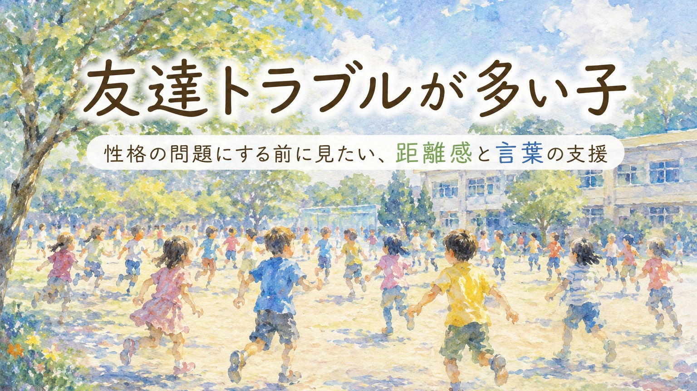

友達とのトラブルが続くと、保護者は強い不安を抱きます。「うちの子が相手を傷つけているのではないか」「性格が悪いと思われてしまうのではないか」「家庭でのしつけが足りないと言われるのではないか」。
けれども、友達トラブルは、性格だけで説明できるものではありません。距離感、言葉の強さ、順番を待つ力、相手の表情を読む力、気持ちの切り替えなど、具体的に支援できる部分が隠れていることがあります。
この記事は、診断や治療、個別の法的判断の代わりになるものではありません。家庭や学校で見えている姿を、支援や相談につなげるための材料として整理することを目的にしています。
1. 「性格が悪い」で終わらせない
友達トラブルが続くと、大人はつい「もっと優しくしなさい」「相手の気持ちを考えなさい」と言いたくなります。もちろん、相手を傷つけないことは大切です。けれども、その言葉だけで改善しない子もいます。
それは、優しさがないからとは限りません。相手との距離をどのくらい取ればよいのか、どの言い方なら強すぎないのか、冗談と嫌なことの境目はどこなのか、負けたときにどう気持ちを戻せばよいのか。そうした具体的な部分が、本人には見えにくいことがあります。
「性格の問題」として叱るだけでは、子どもは「自分は悪い子だ」と感じても、次にどうすればよいかがわかりません。必要なのは、人格を責めることではなく、次に使える言葉と行動を教えることです。
2. 友達トラブルでよく見られるパターン
友達トラブルといっても、原因は一つではありません。まずは、どの場面で、どのように起きているのかを分けて見ます。
| 見えやすい行動 | 背景にあるかもしれない困りごと | 支援の方向 |
|---|---|---|
| 友達に近づきすぎる | 相手との適切な距離がわかりにくい | 立つ位置、声の大きさ、触れてよい場面を具体的に教える |
| きつい言い方をする | 言葉の強さや相手の受け取り方が想像しにくい | 別の言い方を練習する |
| 順番を待てない | 衝動性、見通しの持ちにくさ、待つ時間の不安 | 待つ時間を見える化し、役割や順番を明確にする |
| 負けると怒る | 気持ちの切り替えが難しい、失敗への不安が強い | 負けた後の行動を先に決めておく |
| 冗談が行き過ぎる | 相手が嫌がっているサインを読み取りにくい | やめる合図、相手の表情、言葉の線引きを確認する |
| 謝ってもまた繰り返す | 反省はしていても、次の行動が身についていない | 謝罪だけでなく、再発しにくい環境と練習を用意する |
ここで大切なのは、「悪気がないから問題ない」としないことです。相手が嫌な思いをしているなら、その事実は大切に扱う必要があります。ただし、本人を責めるだけではなく、何を学べば次に変えられるのかを見ていきます。
3. 距離感の支援
友達との距離感が近すぎる子は、相手のことが嫌いなのではなく、むしろ関わりたい気持ちが強い場合があります。しかし、近づきすぎる、急に触る、しつこく話しかける、相手の持ち物を見るなどが続くと、相手は不快に感じます。
この場合、「しつこいよ」と叱るだけでは、本人には何を直せばよいのかがわかりにくいことがあります。距離感は、具体的に教える必要があります。
距離感を教えるときの例
- 話すときは、腕一本分くらい離れる
- 相手の体や持ち物には、許可なく触らない
- 相手が後ろに下がったら、こちらも一歩下がる
- 相手が返事をしなかったら、同じことを何度も言わない
- 「今いい？」と聞いてから話しかける
- 嫌だと言われたら、その場で一度止まる
「空気を読みなさい」ではなく、どの行動をすればよいかに置き換えることが重要です。距離感は目に見えにくいため、絵、図、床の印、実際の立ち位置を使って確認すると伝わりやすくなります。
4. 言葉の支援
友達トラブルでは、言葉の強さが問題になることがあります。本人は事実を言ったつもりでも、相手には責められたように聞こえる。冗談のつもりでも、相手にはばかにされたように聞こえる。そのずれが、トラブルにつながります。
このとき、「そんな言い方をしない」と注意するだけでは足りません。代わりに使える言葉を、具体的に教える必要があります。
| トラブルになりやすい言い方 | 置き換えたい言い方 |
|---|---|
| 「へたくそ」 | 「もう一回やってみよう」 |
| 「違う、そうじゃない」 | 「こっちのやり方もあるよ」 |
| 「早くして」 | 「あとどのくらいでできそう？」 |
| 「入れてあげない」 | 「今は人数がいっぱいだから、次に一緒にやろう」 |
| 「それ変だよ」 | 「自分とは違うけど、そういう考えもあるんだね」 |
言葉の置き換えは、道徳の説教ではなく、会話の道具を増やす練習です。「優しく言いなさい」よりも、「この場面では、この言葉を使う」と決めたほうが、子どもには使いやすくなります。
5. 順番・勝ち負け・ルールの支援
友達トラブルは、遊びの場面で起きやすくなります。順番を待つ、負けを受け入れる、途中でルールが変わる、友達の提案を聞く。こうしたことは、大人が思う以上に複雑です。
特に、衝動性が強い子や見通しを持ちにくい子は、「待てば自分の番が来る」とわかっていても、体が先に動いてしまうことがあります。負けた瞬間に感情が大きくなり、言葉や行動を止めにくくなる子もいます。
順番の支援
順番表、番号カード、タイマーなどを使い、「いつ自分の番が来るか」を見えるようにします。待つ時間に何をしてよいかも決めておくと、トラブルが減りやすくなります。
勝ち負けの支援
ゲームを始める前に、「負けたときは、深呼吸して、水を飲んで、次どうするか決める」など、負けた後の行動を先に確認します。負けてから説得するより、始める前の約束のほうが入りやすい子もいます。
ルール変更の支援
途中でルールが変わると混乱しやすい子には、「今のルール」「変わったルール」を短く確認します。変更が苦手な子には、いきなり合わせることを求めず、一度止まって説明する時間を作ることが大切です。
6. トラブル後に教えたいこと
トラブルが起きた後、大人は「謝りなさい」と言いたくなります。謝ることは大切です。ただし、謝罪だけで終わると、同じことが繰り返されることがあります。
トラブル後に整理したいのは、次の四つです。
- 何が起きたのか
- 相手は何に困ったのか
- 自分は何に困っていたのか
- 次に同じ場面になったら、何をするのか
ここで重要なのは、子どもを追い詰めすぎないことです。感情が高ぶっている最中に長く問い詰めると、本人は防衛的になり、話し合いにならないことがあります。まず落ち着く時間を取り、その後で短く振り返ります。
振り返りの言い方
「あなたが悪い子だという話ではないよ。でも、相手が嫌だったことは大事に考えたい。次に同じ場面になったら、どの言葉を使うか一緒に決めよう。」
反省とは、子どもを落ち込ませることではありません。次に少し違う行動を選べるようにすることです。
7. 学校に相談するときの伝え方
友達トラブルが続くと、保護者は学校からの連絡を受けるたびに緊張します。「またうちの子が何かしたのか」と感じ、学校に相談すること自体がつらくなることもあります。
しかし、家庭だけで友達関係を修正することは難しい場合があります。トラブルは学校の場面で起きているため、どの時間、どの相手、どの活動で起きやすいのかを、学校と一緒に整理する必要があります。
相談の切り出し方
「友達とのトラブルが続いていて、家庭でも心配しています。叱るだけでは繰り返してしまうため、どの場面で起きやすいのか、本人にどんな支援が必要なのかを一緒に整理したいです。」
距離感の相談
「本人は友達と関わりたい気持ちはあるのですが、近づきすぎたり、しつこく話しかけたりしてしまうことがあります。休み時間やグループ活動で、具体的な距離の取り方を確認できないでしょうか。」
言葉の相談
「悪気なく強い言葉を使ってしまうことがあります。注意だけでなく、代わりに使える言葉を学校と家庭でそろえて練習したいです。」
安全面の相談
「相手の子が嫌な思いをしていることは重く受け止めています。相手の安全と安心を守りながら、本人にも再発しにくい支援を入れたいです。」
学校に相談するときは、「うちの子は悪くありません」と守りに入りすぎるよりも、「相手の困りも大切にしながら、本人への支援を考えたい」と伝えるほうが、建設的な話し合いにつながりやすくなります。
8. 家庭で整理しておきたいメモ
学校と相談する前に、家庭で次のようなメモを作っておくと、トラブルを「性格」ではなく「場面」として整理しやすくなります。
このメモは、子どもの責任を軽くするためのものではありません。何が起きているのかを具体的に見て、相手を守りながら、本人にも学べる形を作るためのものです。
9. いじめや暴力に発展している場合
友達トラブルの中には、家庭での声かけや社会性の練習だけでは扱えないものがあります。暴力、継続的なからかい、仲間外れ、物を隠す、ネット上での悪口、相手が強い苦痛を感じている場合などです。
この場合は、「本人に悪気はありません」だけで終わらせてはいけません。相手の安全と安心を守ることが最優先です。学校には、担任だけでなく、学年主任、管理職、特別支援教育コーディネーター、スクールカウンセラーなどを含めて、組織的に対応してもらう必要があります。
一方で、本人に対しても、ただ厳しく叱るだけでは不十分です。何がいけなかったのか、相手にどんな影響があったのか、次に同じことを起こさないために、どの場面で大人の助けを使うのかを整理する必要があります。
「特性があるから仕方ない」と、「だから人格を否定してよい」は、どちらも違います。相手を守ることと、本人に必要な支援を入れることは、同時に考える必要があります。
まとめ：友達トラブルは、性格ではなく「支援できる場面」として見る
友達トラブルが多い子を、「性格が悪い」「意地悪」「空気が読めない」と決めつけると、本人は自信を失い、次にどうすればよいのかがわからなくなります。
もちろん、相手が傷ついている場合、その事実を軽く扱ってはいけません。相手の安全と安心を守ることは大前提です。そのうえで、本人にも、距離感、言葉の選び方、順番の待ち方、負けた後の行動、嫌だと言われたときの止まり方を、具体的に教える必要があります。
「反省しなさい」だけでは、次の行動は育ちにくいことがあります。必要なのは、反省のあとに使える言葉と行動です。
友達関係は、子どもにとって大切な学びの場です。失敗を人格否定に変えず、次の関わり方を学ぶ機会にしていく。その視点が、本人にも、周りの子にも、安全な関係を作っていきます。
友達トラブルを、家庭だけで抱え込みすぎないために
まなびの森教育研究所では、診断や学校判断の代替ではなく、家庭で見えている困りごとや、学校へ伝える言葉の整理をお手伝いしています。
「叱っても繰り返してしまう」「学校にどう相談すればよいかわからない」と感じるときは、相談前のメモづくりから一緒に整えられます。
保護者向け相談ページを見る